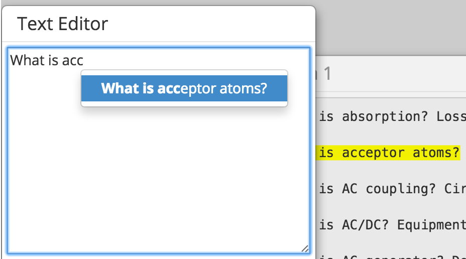
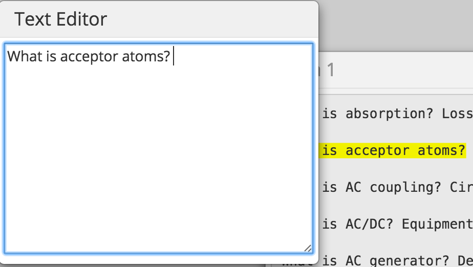

Dear participant , please read the instructions before the experiment.
This study involves copy-pasting text using the Auto-Compaste method and the Traditional Ctrl-C Ctrl-V method.
There will be 18 texts to copy using the Auto-Compaste method as well as 18 texts to copy using the Traditional method.
The text to copy, whether it's a phrase, sentence or paragraph will be on the left panel
The right panel will have windows with the different texts in them.
With the traditional technique, copy paste the yellow highlighted text using Ctrl-C Ctrl-V on your keyboard.
With the auto-complete technique, just type a few letters of the text and select the text from the dropdown.
The AutoComPaste feature shows an Autocomplete option for the text
Just click on the autocompleted text for the text to get copied over.
After completing the 36 trials, repeat the experiment two times more by clicking on "Experiment" again at the top navbar
After completing the experiment 3 times in total, proceed to the Post Questionaire